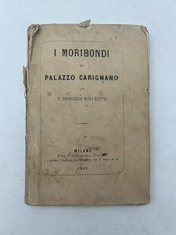
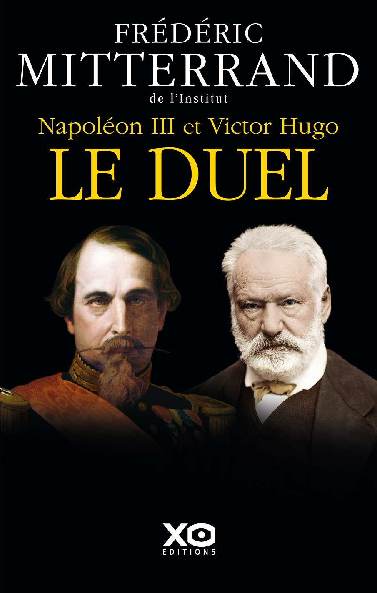
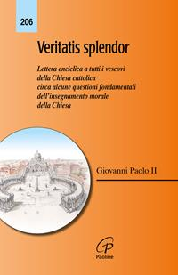

35:17 · 7 OPERE
La dialettica tra potere e pensiero.
Il filo del discorso
Il rapporto fra potere e pensiero viene affrontato attraverso Napoleone III e Victor Hugo, per arrivare a una difesa del confronto pubblico e della libertà di ricerca. Dr Divago muove dal colpo di Stato francese del 1851 e dalla scarsa attenzione che, a suo giudizio, riceve nell’insegnamento. Vi legge il caso di una concentrazione del potere sostenuta anche dal consenso popolare e lo usa per interrogare le fragilità delle democrazie contemporanee. Il racconto accosta però passaggi diversi della vicenda francese: le note distinguono le elezioni presidenziali del 1848, il colpo di Stato e i plebisciti successivi. L’opposizione di Hugo fornisce il ponte verso la domanda centrale: che cosa può fare il pensiero quando chi governa restringe lo spazio della critica? Il relatore contrappone l’abilità nel conquistare risorse e autorità alla cura della vita interiore, ricorrendo a Croce, a immagini evangeliche e ai processi di Socrate e Gesù. Presenta questi ultimi come confronti morali e simbolici, non come vicende storiche sovrapponibili in ogni dettaglio. Nella parte conclusiva il tema della censura conduce a una proposta di metodo: ascoltare obiezioni, verificare i propri argomenti e riconoscere il valore di una correzione. La scheda conserva questa difesa della discussione distinguendola dall’idea, non dimostrata, che una voce censurata sia per ciò stesso vera. Il finale attribuisce alla qualità umana e intellettuale di una persona un’importanza che il successo politico o materiale non può sostituire.
I libri nel discorso

I moribondi del Palazzo Carignano
Copertina: Milano, Fortunato Perelli, 1862; copertina dell’esemplare antiquario fotografato.
Immagine autentica dell’opera, controllata visivamente; l’edizione di riferimento non è attribuita al filmato.
I moribondi del Palazzo Carignano, Petruccelli della Gattina e 1862 espliciti; il nome proprio normalizzato è Ferdinando.
Passaggio 1:51 ↗ · Fonti e libro ↗
Perché non possiamo non dirci «cristiani»
Copertina: Historica, 2022, a cura di Corrado Ocone; ristampa successiva al saggio originale.
Immagine autentica dell’opera, controllata visivamente; l’edizione di riferimento non è attribuita al filmato.
Benedetto Croce e Perché non possiamo non dirci cristiani espliciti. La successiva negazione è una formula del relatore, non un secondo titolo.
Passaggio 12:10 ↗ · Fonti e libro ↗
Napoléon III et Victor Hugo : le duel
Copertina: XO Éditions, 2019; 368 pagine. Edizione di riferimento, non accertata come esemplare del video.
Immagine autentica dell’opera, controllata visivamente; l’edizione di riferimento non è attribuita al filmato.
Frédéric Mitterrand, Napoleone III e Victor Hugo e il duello espliciti; titolo riscontrato presso XO Éditions.
Passaggio 15:34 ↗ · Fonti e libro ↗Vite parallele
Fotografia dei tre volumi delle Vite parallele: Einaudi, 1958, traduzione di Carlo Carena, tre volumi in cofanetto; fotografia dell’insieme.
Fotografia autentica dell’opera in tre volumi, non una singola copertina. Edizione identificata dal catalogo antiquario e dal riscontro bibliografico; non accertata come esemplare del video.
Plutarco e Vite parallele espliciti come modello di accostamento fra figure storiche.
Passaggio 23:50 ↗ · Fonti e libro ↗
Fedro
Identificazione probabile
Copertina: BUR · 2006 · a cura di Roberto Velardi
Immagine autentica dell’opera, controllata visivamente; l’edizione di riferimento non è attribuita al filmato.
Il relatore annuncia un passaggio da Fedro senza leggerlo. Nel contesto socratico l’identificazione con Platone è probabile, non certa.
Passaggio 26:27 ↗ · Fonti e libro ↗
Vangelo secondo Giovanni
Identificazione probabile
Copertina del volume completo: San Paolo, 2014 · Nuova Versione dai Testi Antichi · edizione di riferimento
Vangelo secondo Giovanni è un libro della Bibbia. L’immagine mostra il volume completo San Paolo di riferimento, non un’edizione autonoma del singolo libro e non una versione identificata nella citazione.
La verità vi farà liberi: probabile allusione a Giovanni 8,32; titolo e autore non pronunciati.
Passaggio 27:12 ↗ · Fonti e libro ↗
Veritatis splendor
Copertina: Paoline, collana Encicliche 206, 140 pagine; edizione identificata per ISBN nel catalogo editoriale.
Immagine autentica dell’opera, controllata visivamente; l’edizione di riferimento non è attribuita al filmato.
Enciclica Splendore della verità: identificazione del titolo latino Veritatis splendor di Giovanni Paolo II, non lettura integrale.
Passaggio 27:34 ↗ · Fonti e libro ↗